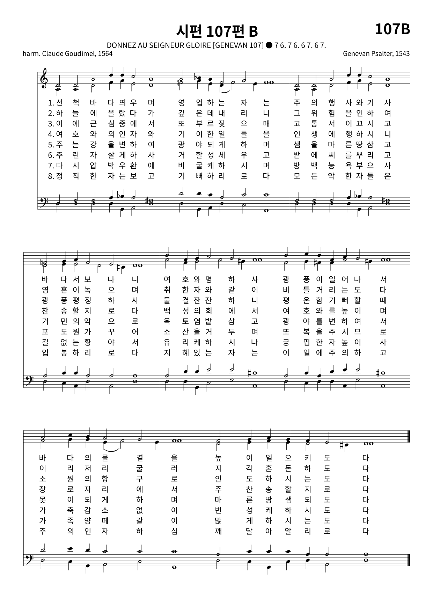

Psalm 107B
DONNEZ AU SEIGNEUR GLOIRE [GENEVAN 107] · 7 6. 7 6. 6 7. 6 7.
English title: Give Thanks to God, Rejoicing
Tune: Genevan Psalter, 1543 · Harmony: Claude Goudimel, 1564 · Lyrics: Korean adaptation of Psalm 107 from the Korean Revised Version (AI draft adaptation · not yet theologically reviewed) · 8 stanzas
Psalm 107 is divided into 2 tunes: A B · This tune contains stanzas 8–15 of the Psalm 107 lyrics.
Score PDF MusicXML (for printing) MusicXML (for accompaniment, with prelude and repeats) Read Psalm 107 (Korean Revised Version)
Score
← Psalm 107A ListAccompaniment (in preparation)Psalm 108 →
Lyrics (Korean)
Stanza 1
선척 바다 띄우며
영업하는 자는
주의 행사와 기사
바다서 보나니
여호와 명하사
광풍이 일어나서
바다의 물결을
높이 일으키도다
선척 바다 띄우며
영업하는 자는
주의 행사와 기사
바다서 보나니
여호와 명하사
광풍이 일어나서
바다의 물결을
높이 일으키도다
Stanza 2
하늘에 올랐다가
깊은 데 내리니
그 위험을 인하여
영혼이 녹으며
취한 자와 같이
비틀거리는도다
이리저리 굴러
지각 혼돈하도다
하늘에 올랐다가
깊은 데 내리니
그 위험을 인하여
영혼이 녹으며
취한 자와 같이
비틀거리는도다
이리저리 굴러
지각 혼돈하도다
Stanza 3
이에 근심 중에서
또 부르짖으매
고통서 이끄시고
광풍 평정하사
물결 잔잔하니
평온함 기뻐할 때
소원의 항구로
인도하시는도다
이에 근심 중에서
또 부르짖으매
고통서 이끄시고
광풍 평정하사
물결 잔잔하니
평온함 기뻐할 때
소원의 항구로
인도하시는도다
Stanza 4
여호와의 인자와
기이한 일들을
인생에 행하시니
찬송할지로다
백성의 회에서
여호와를 높이며
장로 자리에서
주 찬송할지로다
여호와의 인자와
기이한 일들을
인생에 행하시니
찬송할지로다
백성의 회에서
여호와를 높이며
장로 자리에서
주 찬송할지로다
Stanza 5
주는 강을 변하여
광야 되게 하며
샘을 마른 땅 삼고
거민의 악으로
옥토 염밭 삼고
광야를 변하여서
못이 되게 하며
마른 땅 샘 되도다
주는 강을 변하여
광야 되게 하며
샘을 마른 땅 삼고
거민의 악으로
옥토 염밭 삼고
광야를 변하여서
못이 되게 하며
마른 땅 샘 되도다
Stanza 6
주린 자 살게 하사
거할 성 세우고
밭에 씨를 뿌리고
포도원 가꾸어
소산을 거두며
또 복을 주시므로
가축 감소 없이
번성케 하시도다
주린 자 살게 하사
거할 성 세우고
밭에 씨를 뿌리고
포도원 가꾸어
소산을 거두며
또 복을 주시므로
가축 감소 없이
번성케 하시도다
Stanza 7
다시 압박 우환에
비굴케 하시며
방백 능욕 부으사
길 없는 황야서
유리케 하시나
궁핍한 자 높이사
가족 양떼 같이
많게 하시는도다
다시 압박 우환에
비굴케 하시며
방백 능욕 부으사
길 없는 황야서
유리케 하시나
궁핍한 자 높이사
가족 양떼 같이
많게 하시는도다
Stanza 8
정직한 자는 보고
기뻐하리로다
모든 악한 자들은
입 봉하리로다
지혜 있는 자는
이 일에 주의하고
주의 인자하심
깨달아 알리로다
정직한 자는 보고
기뻐하리로다
모든 악한 자들은
입 봉하리로다
지혜 있는 자는
이 일에 주의하고
주의 인자하심
깨달아 알리로다